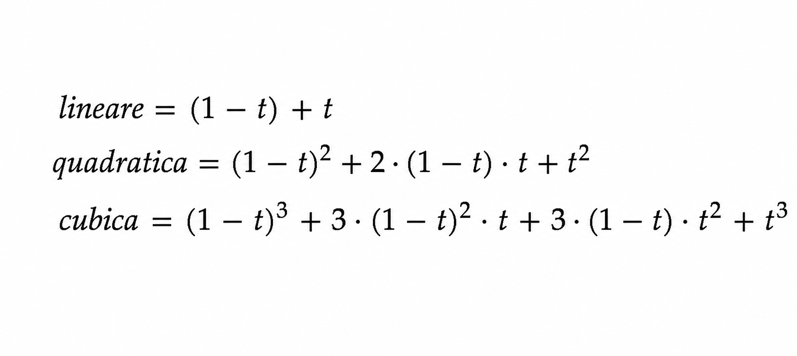

La fluidità della forma:
le curve di Bézier
Introduzione
Le curve di Bézier sono utilizzate per descruire curve lisce e controllabili attraverso un insieme di punti geometrici chiamati punti di controllo. Esse sono strumenti fondamentali della geometria computazionale e della grafica digitale, sono impiegate in grafica vettoriale, animazione, modellazione 3D, CAD, tipografia digitale, videogiochi e software Adobe.
Pierre Bézier fu un ingegnere e matematico francese che lavorava per la casa automobilistica Renault negli anni ’60. Durante la progettazione delle carrozzerie delle automobili, si rese conto che i metodi geometrici tradizionali non permettevano di creare superfici abbastanza fluide, precise e facilmente modificabili.
Per risolvere questo problema sviluppò un modello matematico basato su punti di controllo e funzioni parametriche, capace di descrivere curve morbide e continue: nacquero così le curve di Bézier. La sua teoria rivoluzionò il design industriale e divenne fondamentale nella grafica computerizzata, nei software vettoriali, nei software di animazione e nella modellazione 3D.
Interpolazioni lineari
Una curva di Bézier è definita da un insieme di punti chiamati punti di controllo. Tra questi, solo il primo e l’ultimo determinano gli estremi della curva, mentre i punti intermedi ne influenzano la forma, agendo come vincoli geometrici che ne modificano direzione, inclinazione e curvatura. La costruzione della curva si basa sull’interpolazione lineare, un processo che permette di ottenere punti intermedi tra due posizioni nello spazio attraverso una combinazione pesata controllata da un parametro t compreso tra 0 e 1. Ripetendo questo procedimento in modo ricorsivo tra i punti di controllo, si genera la curva finale in modo continuo e controllato, mantenendo sempre la struttura determinata dai punti iniziali.
Grafico con interpolazione lineare tra i punti di controllo, con coordinate tracciate in tempo reale:
Funzioni Parametriche
Le curve di Bézier sono funzioni parametriche. A differenza delle funzioni classiche \(y = f(x)\), le coordinate \(x\) e \(y\) non dipendono l'una dall'altra, ma sono calcolate separatamente attraverso un parametro comune chiamato \(t\). Esso non rappresenta il tempo reale, ma una posizione matematica lungo la curva. Il parametro \(t\) è strettamente limitato all'intervallo \([0,1]\): quando \(t=0\) ci troviamo all'inizio della curva, quando \(t=1\) siamo alla fine.
Polinomi di Bernstein
Le curve di Bézier usano i polinomi di Bernstein per unire i punti di controllo in una linea continua. I polinomi estraggono i coefficienti dal triangolo di Pascal e dallo sviluppo binomiale per assegnare a ogni punto un peso geometrico variabile in base al parametro \(t\). Questo peso cambia in modo graduale lungo l'intervallo \([0,1]\), assicurando che l'influenza di ciascun punto si distribuisca progressivamente senza generare salti o discontinuità per una transizione fluida della forma.
Il triangolo di Pascal definisce la struttura combinatoria dei coefficienti binomiali che regolano i pesi dei punti di controllo. Nelle curve di Bézier, questi valori non selezionano i singoli punti, ma permettono a tutti di contribuire contemporaneamente e in modo continuo alla costruzione della forma. L'influenza di ciascun punto varia in base al parametro \(t\), garantendo una distributione dei pesi sempre ordinata e simmetrica lungo l'intero percorso della curva.
Partendo dalla forma base del binomio: \((a+b)^n\) e sostituendo con \(a=(1-t)\) e \(b=t\) si ottiene: \(((1-t)+t)^n\) che, sviluppato tramite i coefficienti del triangolo di Pascal, genera i polinomi utilizzati nelle curve di Bézier.



Controllo della curva di Bézier
Le curve di Bézier razionali evolvono i modelli tradizionali introducendo pesi associati ai punti di controllo, che regolano l'intensità con cui ogni punto attrae o allontana la curva. Questa caratteristica garantisce un'estrema flessibilità e precisione nella modellazione di forme complesse, mantenendo comunque la curva sempre all'interno dell'involucro convesso dei suoi punti. Infine, la visualizzazione in tempo reale di coordinate e pesi permette di comprendere l'esatto contributo matematico di ogni singolo elemento sul risultato finale.

Curve di Bézier Razionali
Le curve di Bézier razionali sono un'estensione delle curve di Bézier standard, che introducono un ulteriore livello di controllo attraverso l'assegnazione di pesi specifici a ciascun punto di controllo. Questi pesi permettono di influenzare la forma della curva in modo più flessibile, consentendo di creare curvature più complesse. Sommando weight e ratio otteniamo "quanto fortemente" ciascuna coordinata influenza la curva. Rende le curve estremamente modificabili.
Controllo curve: variazione dei pesi dei punti di controllo e la curva di Bézier razionale risultante
Algoritmo di De Casteljau
Paul de Casteljau è stato un fisico e matematico francese che nel 1959, mentre manteneva un incarico lavorativo per la Citroen, sviluppò un algoritmo per la valutazione di calcoli di specifiche curve. Venne in seguito formalizzato e reso popolare dall'ingegnere Pierre Bézier.
Se vogliamo disegnare una curva di Bézier possiamo scegliere di prendere ogni valore di t e calcolare ogni volta attraverso la funzione base le sei coordinate. Ciò però diventa sempre più complicato da calcolare in base a quanto più complessa la curva diventa.
Per facilitare il calcolo, si utilizzano algoritmi specifici come l'algoritmo di De Casteljau, un approccio geometrico per costruire la curva. Per farlo dobbiamo trattare t come un parametro che varia da 0 a 1 e sapere che il numero di curve equivale al numero di linee di costruzione. Poi dobbiamo segnare un punto su ognuna delle linee a distanza t e tracciare una linea che li colleghi. Bisognerà ripetere questi passaggi fino ad avere una singola linea in cui a distanza t si troveranno le coordinate del punto. Trovare le coordinate dei punti lungo la curva può servirci a semplificare il disegno della curva e a dividerla.
Suddivisione della curva di Bézier
Utilizzando l'algoritmo di Casteljau possiamo dividere una curva di Bézier in due curve più semplici, ognuna con i propri punti di controllo. Per farlo dobbiamo scegliere un valore di t e applicare l'algoritmo per trovare le coordinate del punto corrispondente sulla curva. Poi, utilizzando i punti di controllo e il punto trovato, possiamo costruire due nuove curve di Bézier che insieme formano la curva originale. Ciò è utile per semplificare il disegno della curva e facilitare il calcolo della lunghezza approssimata.
Semplificazione del disegno
Selezionando un certo numero di punti della curva e unendoli con delle linee dritte possiamo semplificare il disegno della curva, riducendola ad una semplice sequenza di segmenti lineari. Ciò rende meno pesante il calcolo in quanto non servirà calcolare un alto numero di coordinate ottenendo comunque una curva abbastanza credibile. Inoltre semplificare il disegno ci può aiutare anche a calcolare la lunghezza approssimata della curva. Però più la curva è complessa e più segmenti lineari serviranno per visualizzare le variazioni della curva, altrimenti rischiamo di ottenere una curva troppo semplificata che non riesce a rappresentare le variazioni di forma.
Calcolo della lunghezza approssimata
Il modo più semplice per calcolare la lunghezza di una curva di Bézier è quello di semplificare il disegno per poi calcolare la lunghezza dei segmenti lineari che la compongono. Ovviamente ciò non ci permetterà di trovare la lunghezza esatta della curva, bensì un stima approssimata. Il margine di errore può essere però visto ridotto aumentando il numero di segmenti lineari.
Colophon
Cenacchi Giovanni e Boero Beatrice
Professor Andreas Gysin
Matematica per il design
Progetto: Repository del corso (GitHub)
ISIA U a.a. 2025-2026